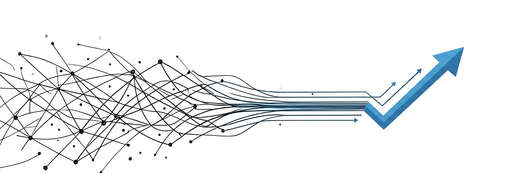

Diseño, arquitectura de bases de datos y desarrollo de software end-to-end. Construimos sistemas limpios, eficientes y automatizados para negocios y empresas que exigen máximo rendimiento los 365 días del año.
En DIS 365 no nos conformamos con escribir líneas de código; construimos ecosistemas tecnológicos robustos. Nacimos con la visión de transformar la complejidad operativa en sistemas limpios, intuitivos y estéticamente impecables.
Entendemos que en el sector, el rendimiento y la fiabilidad no son negociables. Por eso, aplicamos estándares estrictos de ingeniería de software para garantizar que tu empresa opere a su máxima capacidad, los 365 días del año.
Sistemas optimizados y arquitecturas de bases de datos preparadas para procesar altos volúmenes de información sin interrupciones.
Desarrollamos interfaces minimalistas y centradas en el usuario que reducen drásticamente la curva de aprendizaje de tu equipo.
Disponibilidad absoluta. Acompañamos todo el ciclo de vida de tu producto digital con monitoreo y soporte técnico continuo.
Abarcamos todo el ciclo de vida del software. Desde la consultoría inicial hasta el despliegue en la nube, garantizando disponibilidad y escalabilidad continua.
Construimos Software as a Service robusto. Desarrollamos entornos de alto rendimiento utilizando frameworks en Python para crear soluciones limpias, escalables y orientadas al usuario final.
Diseñamos arquitecturas lógicas e infraestructura sólida. Implementamos y gestionamos bases de datos relacionales (como PostgreSQL) preparadas para alta concurrencia de datos.
Integramos inteligencia artificial para potenciar tu atención al cliente y operaciones. Desarrollamos agentes virtuales avanzados capaces de procesar lógica de negocio compleja.
Eliminamos el trabajo manual. Conectamos tu ecosistema empresarial creando flujos B2B y orquestando integraciones mediante REST APIs y herramientas especializadas.
Soluciones a medida. Centraliza la administración, el control de almacenes y la contabilidad en interfaces limpias que optimizan la toma de decisiones.
Desarrollamos páginas web y tiendas virtuales de alta conversión. Integramos catálogos dinámicos con chatbots inteligentes para automatizar ventas y soporte 24/7.
No solo diseñamos arquitecturas, construimos plataformas listas para operar. Conoce nuestras herramientas insignia desarrolladas para transformar la gestión empresarial y de salud.
Sistema de Gestión Clínica
Software especializado con arquitectura en Python diseñado para digitalizar y optimizar el flujo de trabajo en centros de salud. Centraliza historias clínicas, agendamiento y administración operativa en una interfaz limpia.
Conocer más sobre ClinixHerramienta Administrativa y Contable
Una potente solución desarrollada en Python para la automatización financiera. ContaPy Pro simplifica la contabilidad corporativa, la gestión de inventarios y la generación de reportes con alta precisión.
Conocer más sobre ContaPyNuestro Proceso
Un proceso de ingeniería riguroso para garantizar entregas exitosas, puntuales y sin sorpresas.
Auditoría de procesos y definición de KPIs tecnológicos clave para tu negocio.
Diseño de esquemas de datos, flujos de automatización y wireframes UI/UX.
Ingeniería ágil con entregas iterativas y revisiones constantes con tu equipo.
Validación exhaustiva de funcionalidad, seguridad de datos y rendimiento.
Puesta en producción en la nube y monitoreo continuo post-lanzamiento (Soporte 365).
Claridad total sobre nuestro proceso de desarrollo, plazos y garantías.
Hablemos de tus necesidades de software, automatización o infraestructura. Nuestro equipo de arquitectos está listo para diseñar una solución a la medida de tus objetivos.
Correo Corporativo
alejandro.rivas@dis365.com
Sede Base
Maturín, Monagas, Venezuela
Operaciones Globales (Remote)